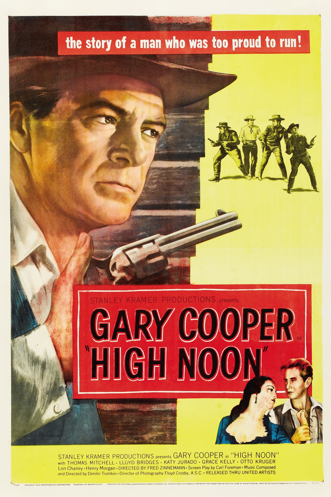

High Noon
25th Academy Awards
(Oscars 1953)
7 Nominations, 4 Awards
| Nominations | ||
|---|---|---|
| Category | Nominees | Result |
| Best Motion Picture | Stanley Kramer | Nominated |
| Actor | Gary Cooper | Won |
| Directing | Fred Zinnemann | Nominated |
| Writing (Screenplay) | Carl Foreman | Nominated |
| Film Editing | Elmo Williams and Harry Gerstad | Won |
| Music (Music Score of a Dramatic or Comedy Picture) | Dimitri Tiomkin | Won |
| Music (Song) "High Noon (Do Not Forsake Me, Oh My Darlin')" |
Dimitri Tiomkin and Ned Washington | Won |